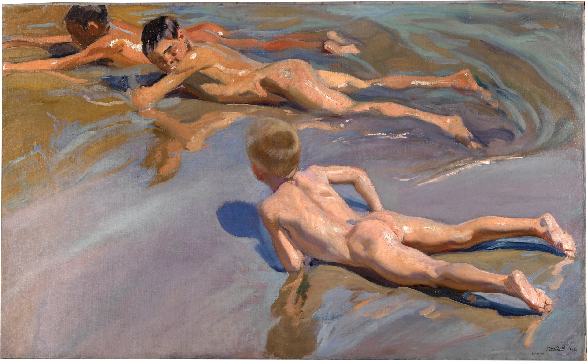

walk on the beach(해변 위를 산책)
여름날의 파도치는 스페인 바다와 그 안의 인물들
flow
그림에 마우스를 올려 물결을 일으켜보세요.



호아킨 소로야(Joaquín Sorolla)
호아킨 소로야(Joaquín Sorolla)는 19세기 후반과 20세기 초기의 스페인 화가로, 밝고 생동감 넘치는 해변 풍경과 인물을 주제로 작품을 창작했습니다. 그의 작품은 선명한 색채와 빠르고 현실적인 화법으로 유명하며, 국제적으로도 큰 인정을 받았습니다. 그의 특징적인 스타일은 현대 예술에 영향을 미쳤으며, 스페인의 생활과 문화를 아름답게 담아냈습니다.
dancers in pink(분홍 옷을 입은 댄서들)
발레리나들의 움직임과 아름다움을 훔쳐보는 드가의 관음적 시선
find
그림에 마우스를 올려 또렷한 그림을 찾아보세요.
에드가 드가(Edgar Degas)
에드가 드가(Edgar Degas)는 19세기 프랑스의 유명한 인상파 화가로, 주로 발레 춤자와 소품을 주제로 한 작품으로 유명합니다. 그의 작품은 독특한 구도와 동적인 움직임을 표현하며, 현대 미술에 큰 영향을 끼쳤습니다. 드가의 대표작으로는 '발레 극장에서', '무용 수업', '목욕하는 여인들' 등이 있습니다.


Happy Christmas, 또는 Silent Night(행복한 성탄)
고요함과 어둠 속에서도 밝게 빛나는 성탄절의 밤
light
그림 위에서 마우스를 클릭해 빛을 만들어보세요.


비고 요한센(Vilhelm Hammershøi)
비고 요한센(Vilhelm Hammershøi)은 19세기 후반에서 20세기 초반의 덴마크의 화가로, 주로 내부 공간을 배경으로 한 정적이고 고요한 풍경을 표현한 작품으로 유명합니다. 그의 작품은 차분하고 고요한 분위기를 통해 인물 없이도 감정과 생각을 전달하는 데 주목됩니다. 그의 대표작 중에는 "인테리어의 여성", "어느 집의 홀", "문 밖으로", "그림자 속의 여인" 등이 있습니다. 요한센은 현대적인 미술에 큰 영향을 미치며, 그의 작품은 오늘날에도 많은 사랑을 받고 있습니다.
the lovers(연인들 II), The Son of Man(인간의 아들)
불편하고 미묘한 감각을 건드리는 초현실 속 익명의 연인
hide
원형을 마우스로 클릭해 움직여보세요.
르네 마그리트(René Magritte)
르네 마그리트는 20세기 벨기에 출신의 현실주의 화가로, 그의 작품은 현실을 왜곡하고 비유적으로 표현하여 유명합니다. "연인들"과 같은 작품으로 유명하며, 그의 작품은 종종 숨겨진 의미와 불확실성을 탐구합니다. 마그리트의 작품은 오늘날에도 예술과 인문학의 분야에서 큰 관심을 받고 있습니다.